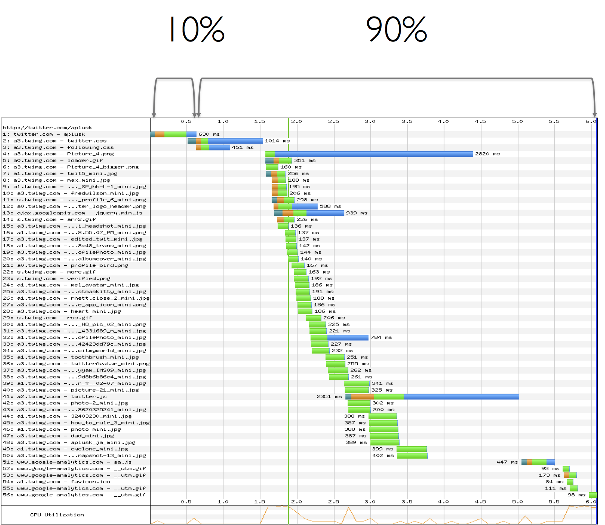
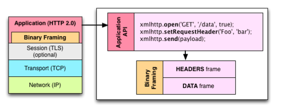
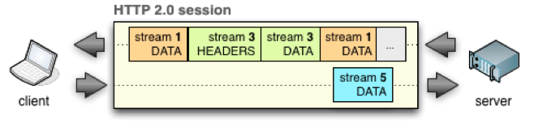

Webperf 2.0
Aller plus loin que les règles classiques
Tech2Day 2015
@stefounet
- in-page perf (rendering, layout, JS, requestAnimationFrame, web workers, memory),
- backend,
- TLS (session reuse, cache, tls record, certificate size),
- TCP (slow start, tcp window scaling, disable slow start after idle),
- WebRTC
- resources timing, navigation timing
Petite
introduction
(pour ceux qui vivraient encore dans des datacenters)
backend/frontend



Les limites des règles actuelles
quand la webperf va à l'encontre de la webperf
- Make Fewer HTTP Requests
- Use a Content Delivery Network
- Add an Expires Header
- Gzip Components
- Put Stylesheets at the Top
- Put Scripts at the Bottom
- Avoid CSS Expressions
- Make JavaScript and CSS External
- Reduce DNS Lookups
- Minify JavaScript
- Avoid Redirects
- Remove Duplicate Scripts
- Configure ETags
- Make AJAX Cacheable

- Ajax
- Responsive Web
- Split initial payload
- Defer JS (non blocking, async)
- Inline scripts position
- Minify HTML
- Optimize images
- Sharding
- Flush the document early
- Use iFrame sparingly
- Simplify CSS selectors
- latence
- TCP (handshake, slow start)
- limites des navigateurs
- HTTP1.1
- im-mobile
mais en fait, aujourd'hui
- les navigateurs ont évolué en 10 ans (Firefox 38!)
- les terminaux ont changé
- les protocoles sont en train de changer (SPDY/HTTP2)
- même les couches réseaux sont remises en cause (QUIC)
- la manière de coder des sites a changé : SPA, RWD
- les widgets ont explosé à cause des tags managers
Concatenation
JS / CSS, Images
- un seul gros fichier peut ralentir la page
- on tape les limites d'IE
- impossible d'établir une priorité dans le code téléchargé
- ça pète le cache (et le flush est plus contraignant)
- maintenabilité
Trouver un intermédiaire en fonction de la taille et de la composition du site.
Sharding / Cookieless domain
- introduit de nouvelles résolutions DNS, en général dans le head
- "low" vs high latency network
Lazyloading
- Lazyloader les premières images est une mauvaise idée !
- A réserver aux images en dessous de la ligne de flottaison
JS at the bottom
Minification
- aucun gain
- sauf si on minifie de façon agressive
- personne le fait parce que c'est trop dangereux
et si on allait plus loin ?
cache cache
et pour commencer si on faisait plus de cacheCookieless cache
- Cacher les pages dynamiques pour les nouveaux utilisateurs ou les utilisateurs anonymes
ESI/Ajax
- Cacher les pages HTML et ajouter les parties dynamiques en Ajax ou en ESI
Chargement progressif
Techniques de sioux
- Async font loading
- Inline critical CSS/JS + async loading
- Inline first view
- JS async/defer/iframe
Pré-
3 type
preconnect, prefetch, prerender
- pas très bien supporté
- accessible en <link> ou en header Link:
- des fois accessible via JS
HTTP2 est arrrrivé
"we’re not replacing all of HTTP — the methods, status codes, and most of the headers you use today will be the same. Instead, we’re re-defining how it gets used “on the wire” so it’s more efficient, and so that it is more gentle to the Internet itself ...." — @mnot
 
- New binary framing
- One connection (session)
- Many parallel requests (streams)
- Header compression
- Stream prioritization
- Server push
remove CSS and JS concatenation
- to help code start earlier
- to maximize resource caching between pages
remove sharding
- prevent many DNS resolutions
- prevent slow start of new connetions
Nouvelles fonctionnalités
- Use server hints to help browser load faster vip resources
- Server push is powerful when resources are not already in browser cache
- SDCH
Budget webperf
- Service workers
- Timeout sync scripts
Et les images